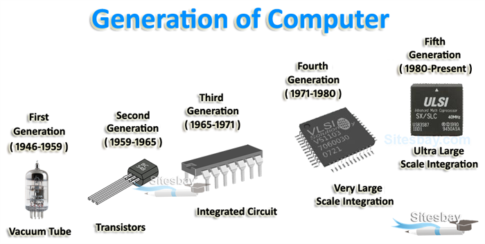

Technology’ is one of the keywords of our world, yet it is also one of the most confused. As an analytical category it seems necessary for our understanding of all of humanity’s history, and indeed beyond. We are probably comfortable with asserting that humans have had technologies since the Palaeolithic, and a menagerie of animals, from crows to chimps, have even been identified as tool users. As an actors’ category ‘technology’ is of surprisingly recent vintage, although cognate terms – techne, arts, and so on – have a much longer history. Yet even for a recent English word ‘technology’ has come to embrace often conflicting meanings. In this essay review I have three aims. First, I will offer a summary of Eric Schatzberg’s important new opus Technology, which untangles and clarifies the history of ‘technology’ and its cognates as actors’ categories. Second, I will conduct a critical analysis, arguing that Schatzberg, while helpfully placing past ways of thinking about technology into two camps, ones he calls the ‘cultural’ and ‘instrumental’ approaches, makes a misstep when he favours the former over the latter. Third, I offer an extension of my preferred instrumentalist definition, one which highlights an essential property of technologies – their power to intervene over scales – in a way that, I suggest, offers a new, invigorating direction of study for historians of science and technology. I Eric Schatzberg’s publications have long been invaluable to those who teach the history of technology. His article ‘Technik comes to America: changing meanings of technology before 1930’, which appeared in Technology and Culture in 2006, was essential reading for students and was the best guide to its subject.1 In Technology: Critical History of a Concept, Schatzberg expands and deepens the overview offered in that paper, and effectively draws upon the best of current historiography, while offering insights of his own. It will be the standard work for many years. Etymologically, ‘technology’ has its roots in the Indo-European root tek, ‘a term that probably referred to the building of wooden houses by wattling, that is, weaving sticks together’ (p. 19). That is why ‘textile’ and ‘technology’ sound similar. From tek comes the Greek techne, initially skills of working with wood but soon broadened to specialized expertise, ‘know how’, knowledge of how to make things that would otherwise not exist. Techne, therefore, concerned the artificial. Nevertheless, there were already disputes. Medicine was a form of techne, at least to some of the Hippocratic authors. But was, say, rhetoric techne? Plato said no, Aristotle said yes. In the Nicomachean Ethics, Aristotle went further: while techne was a form of knowledge (of how to make, an art), it was to be distinguished from phronesis (moral knowledge, knowledge of how to act well) and episteme (knowledge of the eternal). Crucially, these three were set in a hierarchy. Knowledge of how to act was better than knowledge of how to make. This hierarchy led to the separation of means and ends. Ends might be valued, but the mere means of getting there would not be, and in insisting on this point techne became ‘morally neutral’ (p. 22). Schatzberg is careful to contextualize these arguments. Aristotle was defending an aristocratic hierarchy: those at the top might have had time and independence for the contemplation of the eternal as well as the philosophical reassurance of knowing how to act well, while those lower down who had to labour to make the necessities of life possessed techne. But, as Serafina Cuomo and Pamela Long, amongst others, have argued, there were always tensions within the hierarchy: aristocratic society still needed things to be built, and artisans could, on occasion, contest their lowly status. Nevertheless, contempt for the ‘banausic’ – base, manual – arts was passed from Greek to Roman elite culture. While Aristotle’s fine distinctions were lost, the hierarchy remained even as techne, or the Latin translation ars, widened to cover all types of learning. Galen in the second century CE included everything from woodworking and handicrafts (at the contemptible end) to medicine, philosophy and arithmetic (at the honourable end, the ‘liberal arts’). In early Medieval Europe, flattened hierarchies necessitated more contact between clerical elites and craft workers, encouraging deeper reflection by the former on the latter. The result was a new category: the ‘mechanical arts’. Like Lynn White and Elspeth Whitney, Schatzberg credits the twelfth-century theologian Hugh of St Victor with influentially wielding this category, although unlike White he emphasizes that the mechanical arts were still subordinate to the liberal arts. From the fifteenth century the dependence of expanding political, military and commercial power on artisanal skills, which Schatzberg, again following Long, calls the ‘new alliance of techne and praxis’, fostered a ‘surge in authorship about the mechanical arts’, some by a humanist elite and some by artisans themselves (pp. 43–4). Yet this was not an alliance of equals, and the ‘trouble with techne’ – that it had the potential to upset the social order – remained. The mechanical arts remained subordinated, even as their status was somewhat revised. Francis Bacon’s works, such as The New Organon and New Atlantis, exemplified the turn by scholars to ‘reject the categorical separation of science and material practice [ … ] without rejecting the existing hierarchy of head over hand’ (pp. 48, 50). Technicians, as we know from the arguments of Steven Shapin, were written out of visibility. In the eighteenth and nineteenth centuries, two further developments enforced the hierarchy. First, the definition of a clear category of ‘fine arts’ split aesthetic creativity away from the mere craft skills of the mechanical arts. The terms ‘artist’ and ‘artisan’ grew apart. Second, the relationship of ‘science’ to industry was subject to considerable boundary work as scientists and engineers professionalized. For engineers, especially American engineers, ‘applied science’, along with its higher status, could be claimed as their own autonomous body of knowledge. For scientists, such as John Tyndall and Henry Rowland, ‘applied science’ was the application of pure science, a move that reserved the autonomy of their own science while also claiming ‘credit for modern wonders of the industrial age’ (p. 64). As Schatzberg notes, after 1850 the frequency of use of the term ‘mechanical arts’ dropped as ‘applied science’ increased. But the result was, as Leo Marx identified, a ‘semantic void’, ‘the lack of adequate language to capture the dramatic changes in the material culture of the era’.2 It was this void that the term ‘technology’ would ultimately fill. But the journey there would have more twists and turns. In eighteenth-century German academic cameralism, technologie began to be used, for example by Johann Beckmann, to describe a ‘discipline devoted to the systematic description of handicrafts and industrial arts’ (p. 77).3 In other words, Technologie was a form of elite, systematic knowledge. The use of the term ‘technology’ by the American Jacob Bigelow in the title of the first edition of his book Elements of Technology (1829) was almost certainly a borrowing from this German label. Schatzberg convincingly argues, against a 1950s historiography, that Bigelow’s usage of ‘technology’ was certainly not the decisive moment when a new concept entered the English language. Bigelow’s book was a ‘turgid compendium’ read by few; Bigelow himself renamed the text The Useful Arts in the third edition (p. 85). Schatzberg also plausibly argues that the otherwise oddly named Massachusetts Institute of Technology received its name from the German Technologie indirectly: William Barton Rogers proposed it in 1860 and had most likely heard the term when visiting Edinburgh University in 1857 (where there was a short-lived Regius Chair of Technology on the German model). The ‘Technology’ in ‘MIT’ popularized the word, even if it had been adopted, in Schatzberg’s view, as little more than ‘a term sufficiently erudite and foreign to convey intellectual authority’ (p. 90). So ‘technology’ entered the twentieth century as the science of the industrial arts, a term of art for the German cameralists and a brand-like placeholder term in the United States. Yet ultimately the German concept of Technik would have much greater influence. After 1850 German engineers embraced the term Technik in a broad sense, not restricted to a means-to-ends rationality but a coherent and culturally significant category covering the arts of material production. Such a concept, built into a professional identity, placed engineers within Kultur rather than Zivilisation, and therefore made them worthy of higher social status. This move in turn invited questions about the relationship between Technik and culture. While it had been the German engineers that had articulated the broad concept of Technik, it was German social scientists who probed this issue further. Walter Sombart, for example, in his 1911 paper ‘Technik und Kultur’, argued that the causal relationship was bidirectional. ‘In many ways’, notes Schatzberg, ‘this analysis is quite similar to the critique of technological determinism that emerged among American historians of technology in the 1960s and 1970s’ (p. 112). The broad concept decisively entered the English language when in the early 1900s Thorstein Veblen took and expanded the category of Technik as industrial arts but translated it as ‘technology’. An important twist in the history of the term ‘technology’ occurred in the first half of the twentieth century, as Veblen’s critical edge was lost and what Schatzberg calls an ‘apologetics’ developed in the United States, in which autonomous ‘technology became linked to a deterministic concept of material progress’ (p. 138). Charles Beard, for example, spoke in 1926 of how technology marches in seven-league boots from one ruthless, revolutionary conquest to another, tearing down old factories and industries, flinging up new processes with terrifying rapidity, and offering for the first time in history the possibility of realizing the idea of progress.4 Furthermore, by filling in the semantic void caused by the narrowing of meaning of both ‘arts’ and ‘sciences’, ‘technology’ as a driver of change could now mean everything from applied science to broad industrial arts. ‘Technology’ only became a common word in the second half of the twentieth century. By then the damage was done, and conceptual confusion meant that the term could be used in either broad or narrow senses, sometimes embracing cultural or social components, sometimes reduced to mere tools or to means-to-ends rationality. No wonder when we talk about, say, the ‘science–technology relationship’ or technological change as a driver of history the results are so unedifying and intellectually impoverished. II Schatzberg has provided a wonderful service by tracing the conceptual history of technology so clearly. However, he has a normative as well as an analytic target. Indeed, he ends with a manifesto, which he introduces by stating that his book is ‘not a neutral work of scholarship but rather an intervention in the present, a first step in rehabilitating technology as a concept for history and social theory, with an eventual goal of shaping technologies toward more humane ends’ (p. 235). Six tenets follow. To make sense of Schatzberg’s call to arms, we need to pay close attention to how he defines the two ‘sharply diverging traditions’ of talking about technology. Across the two millennial span of his history, Schatzberg places commentators in one or other of the camps. On the one side is the ‘instrumental approach’, which adopts the language of means and ends and which thereby ‘portrays technology as a narrow technical rationality, uncreative and devoid of values’. Aristotle, Hugh of St Victor, Johann Beckmann and Talcott Parsons, for example, were instrumentalists. On the other side is the ‘cultural approach’, in which technology, defined initially as ‘the set of practices humans use to transform the material world, practices involved in creating and using material things’, is further seen as a ‘creative expression of human culture [ … ] imbued with human values and strivings in all their contradictory complexity’ (pp. 2–3). The Kultur-oriented German engineers of the nineteenth century, Lewis Mumford, and the 1960s critics of technology took the cultural view of technology. Schatzberg wants us to reject the instrumentalist approach and embrace the cultural, as he states most plainly in the opening propositions of his manifesto: Liberate technology from scholars who reduce it to instrumental reason, to the process of finding the best means to a specific end. By rejecting instrumentalism, we also reject the belief that technology lacks its own moral compass. Rescue technology from determinists, people who view technology as driven by its own ends, as a self-directed system isolated from conscious control (p. 235). ‘Determinism whether expressed by enthusiasts or pessimists, is tightly linked to an instrumental conception of technology that divorces it from culture’, he argues, and to ‘overcome this determinism, scholars need to consciously recreate and also popularize a cultural view of technology’ (p. 232). While I fully sympathize with the aim to oppose technological determinism – and who wouldn’t? – I think three major critical replies can be made. First, the cultural approach’s definition of technology is so capacious as to be almost useless. It is hard to think of a practice which does not at some point involve materiality either in creation or use. Furthermore, the cultural approach is not only broad but vague. Is there really nothing we can add to sharpen the meaning of practice so that it captures something specifically technological? Finally, while determinists are often instrumentalists, it is not the case that all instrumentalists are determinists. An instrumental definition of technology can allow that there is a choice of means towards ends, and that any particular means does not determine any particular end. The making of means can draw on the full range of human creativity while the articulation of ends can be shaped by human values. In short, an instrumental definition of technology might be focused enough to be meaningful and rich enough to meet the desire for technology to be creative and culturally inclusive. To help us, we might bear in mind the necessity that historians carefully distinguish between the concepts used by historical actors and the analytical concepts deployed by historians. Schatzberg has given us a detailed and fair account of the concepts akin to ‘technology’ as they have been used by historical actors in Europe and America over two millennia. Inevitably the label to cover these usages is broad and spans the spectrum of both instrumentalist and cultural approaches. But that does not mean that ‘technology’ as an analytical category needs to be the same. A well-chosen definition might not only help as a historian’s analytical category but also serve for sociologists and philosophers. III Let us start with the instrumentalist approach that technologies are means to ends and see if it can be improved. The first addition would be to add ‘material’. Prayers, spoken language and swimming strokes are means to ends; two of them are techniques and as such they share a family resemblance with technologies. But we can both reserve the useful difference of the term ‘technique’ as well as sharpen the analytical definition of ‘technology’ if we agree to exclude practices that can be accomplished without external, material aid. Second, we shall insist on ‘designed’. In other words, a technology has to be a contrivance. The earthen ground might be a material means to the end of not falling but it is not a technology in the same way as a designed platform. That gives us technology as a ‘designed, material means to an end’. This definition is one I use in classes. But there is one further important feature of all technologies that I would like to identify and emphasize. Since it is a feature of all technologies, it is not an addition, a narrowing or a broadening, of the definition, but it does say something significant about what technologies do. Technologies, perhaps essentially, intervene between scales. Consider driving an automobile. At one level a car is a designed, material means of moving a distance that would otherwise be inconvenient to walk. But as an assemblage of technologies, the components of an automobile translate body-scale to street-scale movements: a turn by hand of a steering wheel or the press of a foot on a pedal results in larger movements to the side or forwards. The scale in this case is one of distance. Other technologies work on different scales. The scales in question can be thermodynamic (think of fridges), of luminosity (lighting) or of many other kinds. Scientific instruments are particularly fascinating technologies, since they not only intervene between scales – consider the telescope and microscope as obvious examples – but can also help constitute them, not least through measurement and unit definition. The scale of achievement, if you excuse the pun, has been extraordinary. A scientist at a desk in Pasadena can make a few changes to lines of code as represented on the screen before her – a human-scale technology. Running the code makes electrons move through logic gates in the semiconductor substrate, activating signals to pass via wires and then, oscillating through the transmission aerial of a Deep Space Network substation, producing electromagnetic waves that move outwards until, 18 h later, way beyond the orbit of Neptune, electrons are nudged within the Voyager 1 spacecraft. A returning signal produces new data on another screen in Pasadena. This is the reach of modern science and the scales of intervention of modern technology: intervening and representing at scales human but also at what the philosopher Alfred Nordmann calls the ‘uncanny’ scales of the very very small and the very very large.5 This intervening power is the nature, the essence if you will, of technology. It is present in the sublime of planetary science but also the mundane of changing gear while driving a car, or even brushing your teeth. Investigating this intervening power is a way of opening up what ‘designed’ and ‘material’ mean in the definition of technology as a designed, material means to an end. My last contention is that thinking about scale offers a way of reinvigorating the history, sociology and even philosophy of technology in ways that also directly invite the work of historians of science. Historians of science have paid attention to many things which scale (laboratories, maps, photographs, models, units), although it is telling that we do not have a word for the general category, suggesting that there is an opening for more general and deeper analysis. Likewise, historians of technology have gravitated to descriptions of scale – think for example of accounts of global systems, or the Tensions of Europe project (for a regional scale), or studies of nanotechnology – without explicitly and comparatively examining a key term. Technologies, especially scientific instruments, simultaneously invoke and substantiate scales. There is the opening here for a ‘new thinking about technology’ (a complement or challenge to interpretative sociology of technology, and a restart for philosophy of technology). We can still research the richness of ‘technology’ as an actors’ category while sharpening and thinking with ‘technology’ as an analytical category.
V\A computer is a digital electronic machine that can be programmed to carry out sequences of arithmetic or logical operations (computation) automatically. Modern computers can perform generic sets of operations known as programs. These programs enable computers to perform a wide range of tasks. A computer system is a "complete" computer that includes the hardware, operating system (main software), and peripheral equipment needed and used for "full" operation. This term may also refer to a group of computers that are linked and function together, such as a computer network or computer cluster. A broad range of industrial and consumer products use computers as control systems. Simple special-purpose devices like microwave ovens and remote controls are included, as are factory devices like industrial robots and computer-aided design, as well as general-purpose devices like personal computers and mobile devices like smartphones. Computers power the Internet, which links billions of other computers and users. Early computers were meant to be used only for calculations. Simple manual instruments like the abacus have aided people in doing calculations since ancient times. Early in the Industrial Revolution, some mechanical devices were built to automate long tedious tasks, such as guiding patterns for looms. More sophisticated electrical machines did specialized analog calculations in the early 20th century. The first digital electronic calculating machines were developed during World War II. The first semiconductor transistors in the late 1940s were followed by the silicon-based MOSFET (MOS transistor) and monolithic integrated circuit (IC) chip technologies in the late 1950s, leading to the microprocessor and the microcomputer revolution in the 1970s. The speed, power and versatility of computers have been increasing dramatically ever since then, with transistor counts increasing at a rapid pace (as predicted by Moore's law), leading to the Digital Revolution during the late 20th to early 21st centuries. Conventionally, a modern computer consists of at least one processing element, typically a central processing unit (CPU) in the form of a microprocessor, along with some type of computer memory, typically semiconductor memory chips. The processing element carries out arithmetic and logical operations, and a sequencing and control unit can change the order of operations in response to stored information. Peripheral devices include input devices (keyboards, mice, joystick, etc.), output devices (monitor screens, printers, etc.), and input/output devices that perform both functions (e.g., the 2000s-era touchscreen). Peripheral devices allow information to be retrieved from an external source and they enable the result of operations to be saved and retrieved.
